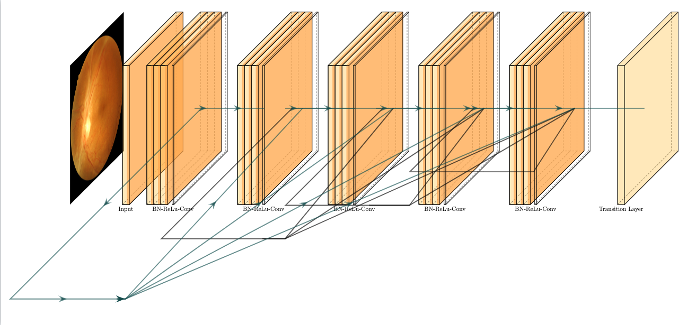

Read about the technical details for the AI-based algorithm and smartphone retinal camera system.
In collaboration with BRAC University, we have published a validation study of the performance of our neural network on Bangladeshi Eyes. Our paper is available on ArXiv here, and our code is available on Github here. The paper is also currently in review for a top journal.
We use a DenseNet-121 state-of-the-art image classification model to perform diagnosis based retinal scans. We train our algorithm on a publically available dataset and perform grade-based screening. A diagram of the DenseNet convolutional block with our retinal scans is shown below. Our paper goes in-depth into the architectural details and training procedures.
To be completed